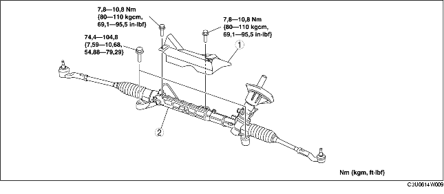

VERWIJDEREN/PLAATSEN STUURHUIS EN SPOORSTANGEN
B3E061432960W01
-
Opmerking
-
• Als de onderstaande procedures worden uitgevoerd zonder de wielsensor te verwijderen, kan er een onderbreking in de bedrading ontstaan als daar per ongeluk aan getrokken wordt. Neem de wielsensor (aszijde) los voordat de onderstaande procedures worden uitgevoerd en bevestig de sensor op een zodanige plaats aan de auto, dat er niet per ongeluk aan getrokken kan worden.
1. Verwijder het subframe, de stabilisatorstang, de wieldraagarmen en het stuurhuis als één geheel met behulp van een krik. (Zie VERWIJDEREN/PLAATSEN SUBFRAME VÓÓR.)
2. Verwijder de onderdelen in de aangegeven volgorde, zie de tabel.
3. Plaats de onderdelen in omgekeerde volgorde.
4. Controleer na het plaatsen de voorwieluitlijning en lijn de voorwielen indien nodig uit. (Zie VOORWIELUITLIJNING.)

.
|
1
|
Hitteschild
|
|
2
|
Stuurhuis en spoorstangen
|